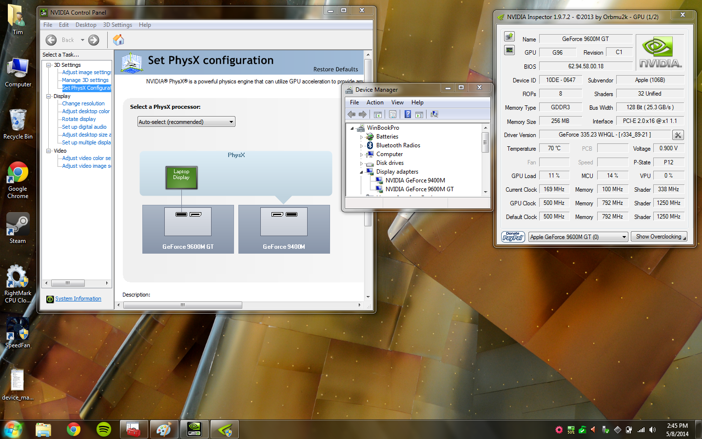

The Mac's EFI won't support it, huh?
How I got 64-bit Windows 7 booting in EFI on a Late 2008 unibody MacBook Pro
## Why? **Because I can.** Actually, it's because Apple's BIOS Emulation setup for Bootcamp doesn't allow you to use both of the GPUs that are built-in (GeForce 9400M and Geforce 9600M GT). BIOS Emulation restricts you to just the 9600M GT, which produces a lot of heat and drains the battery fairly quickly (thanks to terrible power management). While it's great for gaming, it's overkill for simple tasks that you may need Windows for. Booting up Windows using the MacBook's native EFI allows you to have access to both GPUs, and gives you a bit more control of what they do. ### My original MacRumors post This goes way back to 2014 when I first figured this out. I posted my documentation on MacRumors to see if it would help them out. To the best of my knowledge, I may have been the only one who got as far as booting up using the 9400M with the 9600M GT, but there were also a lot of pages that I didn't read. Nonetheless, here it is: [Post #1045 Dec 26, 2014](http://forums.macrumors.com/threads/win7-x64-booting-natively-via-efi-no-bios-emulation.696523/page-42#post-20529412) ``` Lord have mercy this thread is still going! :p Anyway, I just registered on the forum so I could post this and hopefully help someone who is stuck in my case. I figured this out earlier last year but never got around to posting it. I have no idea if I'm actually too late to post this because I didn't bother to scroll through the 30-or-so pages that weren't there last time I was on this thread ;) I've figured out how to switch and enable/disable the graphics card on the MacBook5,1 (9400+9600) in the rEFIt EFI shell itself. This applies to Windows 7 only, as I have not tested Windows 8 on mine (and frankly, screw Win8 XD) This will allow you to use either the 9400M and disable the 9600M GT in Windows, thus saving power, OR, enable BOTH the GPUs and have whatever Windows software you want utilizing them both. NOTE: you still can't switch actual displays on the fly, but applications can take advantage o both graphics cards at once. Yes, I know some of you are probably concerned about overheating, but trust me, it's not an issue. This laptop is so well engineered that I've never seen the temps rise to a critical level. Obviously, make sure it have proper ventilation, etc... This is all the documentation I have written down for myself, hope you guys find it useful. Documentation: PCI Device 02 00 00 <- Nvidia GeForce 9600M GT (also device E5) PCI Device 03 00 00 <- Nvidia GeForce 9400M (also device E7) #### How to switch between GPUs #### User dmpstore gpu-power-prefs to check with GPU has power dmpstore gpu-power-prefs -s fs0:\gpu-power-prefs #store the existing setting on the EFI partition #edit the GPU power setting to power on the card that will be the display output hexedit gpu-power-prefs 00 00 00 00 corresponds to discrete GPU 01 00 00 00 corresponds to integrated GPU Reset NVRAM if you screw something up REBOOT AFTER CHANGING and check dh e5 or dh e7. Don't set the gpu-power-prefs and try to boot directly into Windows, it won't work. After rebooting, you need to set the VGA controller for Windows to use when displaying output: NOTE: DO NOT ENABLE BOTH VGA CONTROLLERS AT THE SAME TIME. Windows won't boot. Windows prefers that only one VGA controller is in charge of video output. To power on the 9600: mm 0750 -IO 3 Conversely, to power it off: mm 0750 -IO 0 To set its bus master and enable VGA for the 9600 mm 000C003E -PCI 8 Setting register 3E to 8 enables VGA on the PCI bridge for the 9600 is 00 0C 00 that bridge (0C) mm 02000004 -PCI 7 Setting register 04 on bus 02 device 00 to 7 enables bus master and activates the 9600 Boot Windows with fs2:EFI\BOOT\BOOTX64.EFI (change fs2 to your drive number) Enable VGA on the 9400: mm 0010003E -PCI 8 Set register 3E on bus 00 device 10 (PCI bridge for integrated graphics) to 8 to enable VGA mm 03000004 -PCI 7 Set register 04 on bus 03 (9400 bus) to 7 to enable bus master and activate the 9400. Setting register 3E to 8 on either device 0C (discrete) or device 10 (integrated) will enable VGA for that respective GPU. Setting register 04 on either bus 02 or bus 03 will enable the corresponding GPU. Power off the 9600 (mm 0750 -IO 0) to save juice when using the 9400. You can check the values for the buses/devices using: pci -i 00 0C 00 -b (the PCI-X bridge) pci -i 00 10 00 -b (the PCI integrated bridge) dh e5 -b (the discrete 9600 device) dh e7 -b (the integrated 9400) pci -i 02 00 00 -b (for the discrete gpu) pci -i 03 00 00 -b (for the integrated gpu) Hope this helps, sorry again if I'm late and someone has already figured this out. Cheers! ``` ### The results speak for themselves:
